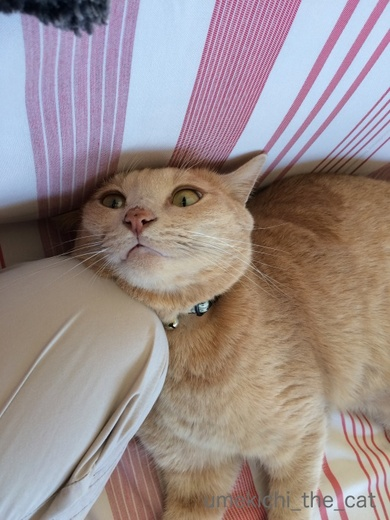
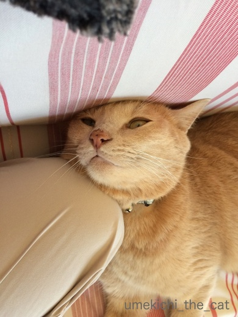
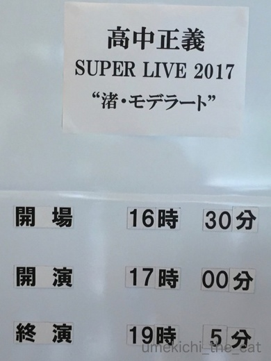
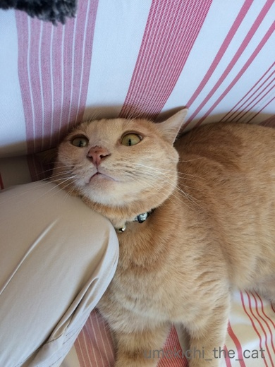
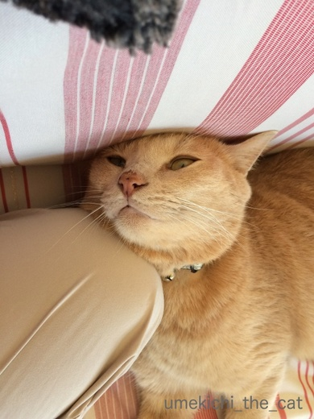
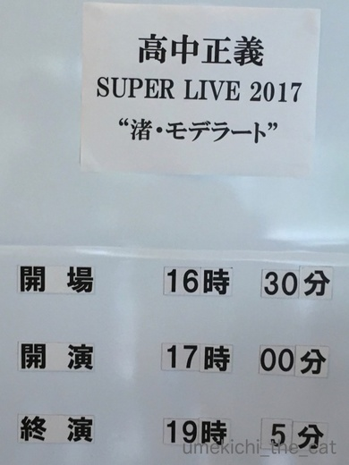

枕で嬉しゅうございます [梅吉]
ソファに座っていると隣にやって来た梅吉さん。

あらら〜(≧▽≦)おかーさんのお膝に頭を乗せちゃうんですか？

![[猫]](https://blog.ss-blog.jp/_images_e/101.gif) ちょうどええかんじや つかわせてもらうで
ちょうどええかんじや つかわせてもらうで
おかーさんは枕になるのですね！喜んで！！

ずり落ち気味だけどいいねー。

そのブサ顔がいいねーー！

一歩も動かずに枕に徹したいと思います(*>艸<)
涼しくなって来て密着してくる頻度が高くなって来ました。
夜寝る時もマットレスの足元から足の間に寝る場所を変更です。
寝返りが打てないのよ！
 ↑ガブッと一押し↑
↑ガブッと一押し↑
週末はおっとと高中正義ライブへ。

「BLUE LAGOON」カッコよかったなぁ。
この時弾いていたギターはヤマハのなんちゃらだそうです。
（私はその辺詳しくないのです^^;）
またまたヒガンバナを見て来ましたよ。
赤
白
黄色〜！
クリーム色っぽいのはよく見ますがここまで黄色いのは初めて見ました。

あらら〜(≧▽≦)おかーさんのお膝に頭を乗せちゃうんですか？

おかーさんは枕になるのですね！喜んで！！

ずり落ち気味だけどいいねー。

そのブサ顔がいいねーー！

一歩も動かずに枕に徹したいと思います(*>艸<)
涼しくなって来て密着してくる頻度が高くなって来ました。
夜寝る時もマットレスの足元から足の間に寝る場所を変更です。
寝返りが打てないのよ！
週末はおっとと高中正義ライブへ。

「BLUE LAGOON」カッコよかったなぁ。
この時弾いていたギターはヤマハのなんちゃらだそうです。
（私はその辺詳しくないのです^^;）
またまたヒガンバナを見て来ましたよ。
赤
白
黄色〜！
クリーム色っぽいのはよく見ますがここまで黄色いのは初めて見ました。

カフェオレ色の梅吉

梅吉 2023年8月10日 永眠


梅吉と出会った譲渡会

犬猫の理由なき殺処分ゼロ
妄想広告
UMEKICHI 光

爆発的に早い！
時々攻撃的！
Thanks to Mr.Boss365
爆発的に早い！
時々攻撃的！
Thanks to Mr.Boss365

わーわー！わたしも猫様の枕になりたい！
こんなにぴったり密着してくれるなんて
羨ましいわぁーーーー
しかも足の間に寝る場所を変更ですと？？？
喜んで変わりますわ！！(笑)
あ、いのちつないだワンニャンコンテストね、
事務局から振込先教えての連絡が来ました！
賞金貰えそうよ。いくらだろうーーーｗ
by リュカ (2017-09-25 15:56)
わかります、わかります！！
クッション代わり、湯たんぽ代わり、なんでもＯＫ♡
膝でも手の平でも、お腹でも、なんでも使ってちょーだい(^^)/
梅吉さん、なんとも気持ちよさそうな表情。
安心して気が緩んだお顔、キュート過ぎます～。
by morichan (2017-09-25 15:59)
わ～いいなぁ。素直に羨ましい～～(*^_^*)
私も枕になりたい～～
by palpal (2017-09-25 16:55)
わ～私も梅吉さんの枕になりたい！！
ウチのはほんとによそよそしい猫で、用事のある時（ごはん、遊ぼ）しか寄ってきてくれません・・・(-_-メ)
それでも室温が20℃を切るようになるとホカペがわりに膝に乗って来ることも。なので暖房はいつも最小限です。
高中懐かし～学生時代にライブに行きました♪
ギターはヤマハのＳＧブルーでしょうか、人気でしたもんね。
by ゆきち (2017-09-25 16:55)
あらー！素敵な自慢ありがとうございます。＾＾
梅吉さんたら意外と甘えん坊さんなのね（笑）
by じゅらまろ (2017-09-25 16:56)
これは嬉しいですねぇ～♪
もう枕になりきります(*^_^*)
ってこういうときトイレに
行きたくなったりするんですよね（笑
by きぃ (2017-09-25 17:31)
梅吉さん、気持ちよさそうですね～(^_^)
ご近所さんでまた猫が生まれたらまた譲って頂こうかな・・・。
高中正義ライブ、いいですね！
家にはLPがたくさんあります・・・って歳がわかっちゃいますね(^^;)
by kou (2017-09-25 18:26)
ちぃさんはいつも優しいですね~。私は膝のりをせがむ猫たちにダメダメしながら用事を済ませます。だってこっちがくつろいでる時は来なくて、忙しい時に甘えて来る~。
by zombiekong (2017-09-25 18:46)
上手に枕を使ってますね！人と同じで少し高さがある方が寝やすいのかも～?
by みぃにゃん (2017-09-25 18:57)
梅吉くん、お膝枕を一人占めだね。全然ぶちゃいくじゃないし。
可愛くって、一歩も動かずに足のしびれにも耐え、
トイレもいけないのよね・・・(^^;
寝るときももう少し寒くなってくると足の間からお布団の中に
移動してくるよ～。ぬくぬくだよ～(^-^)
彼岸花、きれいです。
by emi (2017-09-25 19:17)
梅吉さん、膝枕を堪能してますね(^^)
by ma2ma2 (2017-09-25 19:43)
膝枕〜！！
ほんのりと伝わってくる淡い温もり。
至福のひと時ですね！
そして梅吉さんも心地よさそう♪ ^^)
高中正義といえば、やっぱりブルーのSG-2000！
これほど黄色い彼岸花は見たことありません。
by yes_hama (2017-09-25 21:14)
秋なのですね〜
密着度が凄い。
下僕殿、冥利に尽きる枕状態。
頑張れ下僕殿。
by kiki (2017-09-25 21:42)
いいなぁ〜うちは膝枕なんて、してくれませんもの。
羨ましい。
by nachic (2017-09-25 22:00)
梅吉さん、ちぃさんにメロメロですね♪
なんか、羨ましいです。
色んな色の彼岸花があるんですね。
黄色は初めてです(^^♪
by riverwalk (2017-09-25 22:35)
長男君は私を枕にする子でしたねぇ。
また思い出しちゃった＾＾；
by ぽちの輔 (2017-09-26 07:31)
王子が積極的にくっついていくのは婆なんですよねぇ。
婆はおかあさん、私は友達なのかなぁ。
高中！ペンギンダンサーが頭の中で鳴った〜！(^^)
by も〜 (2017-09-26 08:56)
「足の間で寝るから動けない」・・・くぅ～、思い切り自慢ですね(>_<)
私もお猫様に膝枕したいし、寝るときに地蔵のようになって
朝起きたら体がガチガチになっても良いから一緒に寝てみたいです(T_T)
by ニッキー (2017-09-26 14:02)
梅吉さん、あらら～そこに来ます？
その枕、高くないですかぁ？
いろんな顔して密着してくれて～＾＾
足の間‥それは動けない！動かないように修行になりますね＾＾
by sana (2017-09-26 19:02)
大学生時代、高中正義やラリーカールトンのLPをよく聞きました。懐かしいな。。
by 水郷楽人 (2017-09-26 21:26)
いいなぁ～。
私も梅吉さんの枕になりたい～ヾ(*´∀｀*)ﾉ
by sumi-cyan (2017-09-26 23:23)
猫がくっついてる時は、トイレだって我慢しちゃいます＾＾；
枕にしに来てくれるなんて、いいな～♪
高中正義、いいですね。
フュージョン大好きです＾＾
by マーヤ (2017-09-27 00:47)
挟まって寝ると落ち着くのと
一緒かな？
彼岸花も年々観賞品種が増えていきますね。
by 響 (2017-09-27 09:06)
リュカさん＞間違いなく寝不足になりますよー＾＾
寝不足は幸せの証？( ^ω^ ）
まぁ〜〜現金！現金！！
あおくんに「ごちそうさまー」と美味しい物に化けるのかな(*>艸<)
morichanさん＞使ってもらえるだけで幸せー！ですよね。
でも、よしかかられる時ってなぜかこちらの体勢が悪い時が多くて^^;
この時は曲げた足を枕にされ伸ばすことが出来ずに足がしびれましたw
万全の体制（体勢）で「さあ！どうぞーー」の時は
なぜか来てくれない( ；∀；)
palpalさん＞枕希望者続出の為、ただいま順番待ちですよ〜(*>艸<)
私は梅吉の枕になるけれど、梅吉は私の枕にはなってくれない・・・
お嬢さんがうらやましい〜〜
ゆきちさん＞あはは(≧▽≦)こてつくんのお陰で冬の暖房費は
バッチリ節約ですね！
高中さんのギター、そうです！そうです！！
メタリックブルーのかっちょええギターでした＾＾
じゅらまろさん＞わたしも自慢しちゃいましたー(*>艸<)
梅吉はガブガブ猫のくせに超甘えん坊。
ガブガブもね、構って欲しくて噛むんですよ。Loveガブですわww
きぃさん＞枕の気持ちがよくわかりました(*>艸<)
トイレに行く時は抱っこして一緒に入って
ちょっとだけ膝から降りて待ってもらって
また抱っこして一緒にソファーにもどって
隣に寝かせたらまたもたれかかって寝始めましたw
過保護？ですよねーーー！！！
kouさん＞猫の気持ち良さそうな顔は見ていてホッとしますよね＾＾
子猫、是非是非受け入れてくださいませ！！
高中さんのLP、我が家にも沢山ありますよ〜。
プレイヤーも健在なので聴けちゃいます！
zombiekongさん＞そうそう^^;忙しい時に限って甘えて来ますよね。
あとは外出間際＆人間の食事時のトイレ・・・嫌がらせか！？
もちろん私もダメダメすることはしょっちゅうです・・が
部屋の隅から拗ねた目で「じ〜〜〜っ」と見られると罪悪感がして
ついつい要求に答えてしまいますw
みぃにゃんさん＞お布団に来ても一緒に（リアル）枕を
使ったりするんですよ(*>艸<)
やっぱり楽なのでしょうねー。。
emiさん＞それがトイレに一緒に行くのですよ^^;
用をたす時は流石に膝から下ろしますが行き帰りは抱っこにて。。
ソファに戻るとまた同じ体勢に・・・(⌒_⌒;
梅吉、適応能力抜群ですww
冬はお布団の中で私の腕が梅吉の枕になるんですよー。
そのせいか去年の冬は肩が痛くて・・・50肩？って言わないでね！
ma2ma2さん＞堪能していただきました＾＾
私も梅吉の温もりを・・・ちょっと暑かったですけどね(^_－)☆
yes_hamaさん＞昼間はまだ暑い大阪ですが幸せな温もりでしたよ〜＾＾
おお！ゆきちさん同様yes_hamaさんもお詳しい！！
ブルーのギター、メタリックでカッコ良かったです。
前から二列目の良席だったのでピックかスライドバーを投げてもらえるかな？
と思っていたのですが・・・
高中さん、投げてくれなかった〜〜〜( ；∀；)
kikiさん＞にゃんこも敏感に季節の変化を感じている様です＾＾
枕にされたからには無我の枕の境地に。
足の痺に耐え、トイレも・・・トイレは梅吉を連れて一緒に行きました^^;
でも戻って来てもちゃんと元の状態で寝ていただけましたよヾ(*ΦωΦ)ﾉ
nachicさん＞腕枕、膝枕、指枕・・・(*>艸<)
梅吉甘えん坊なのでおかーさん（もしくはおとーさん）を
枕使いするのが上手いです^^（自慢！！）
riverwalkさん＞梅吉とは相思相愛なのでＯ(≧▽≦)Ｏ
彼岸花、あまりにも黄色くて違う花？と思ったのですが
ちゃんと彼岸花でした。
改良された園芸品種なのでしょうか？
ポチの輔さん＞長男くん、梅吉と似た行動が多かったのですね。
子猫さんの今後の行動に期待！です＾＾
も〜さん＞王子にとっても〜さんはオールマイティな下僕！？
時におかあさん、時に友達そして優秀な下僕(*>艸<)
「ペンギンダンサー」LP引っ張り出して改めて聴いてみました(๑˃̵ᴗ˂̵)و
ニッキーさん＞梅吉に一方固められるだけでも動けない・・・
と思ってしまうのにゴッドマザー様の様に四方を固められたら・・・
私などまだまだ地蔵修行が足りませぬ (⌒_⌒;
sanaさん＞ニャンコは人間が見ると決して心地良さそうとは思えない場所で
寝ちゃいますよね〜。
くっつかれる方としては嬉しいことではあるのですが( ^ω^ ）
でもくっつく時は人間が楽な姿勢の時にしていただきたいわ〜。
この時は膝を曲げていたので結構辛かったです^^;
水郷楽人さん＞青春時代に聴いていた曲って耳に馴染んで
やっぱりいいなぁと思いますよね＾＾
ラリー・カールトンはスティーブ・ルカサーと来日した時のライブに行きました！
ベーシストがラリーの息子でびっくりでしたよ。
sumi-cyanさん＞梅吉の枕希望者続出でびっくりで〜す(*>艸<)
枕にされたらがぶがぶも付きますので覚悟してくださいね！
マーヤさん＞これからの季節、いつ猫様にくっつかれるかわからないので
行ける時にトイレ行っとかなきゃ！ですね＾＾
「フュージョン」！マーヤさん私と同じ年代の方とお見受けしました(^_－)☆
響さん＞せまい所、挟まる感じ、私も子供の頃よく隙間で寝落ちしてました^^;
猫みたい・・・
そのうち八重の彼岸花が登場するかも！？ゴージャスそう！！
by ちぃ (2017-09-27 11:20)
周回遅れで、“高中正義”に激しく反応しておきたいと思います。
めちゃめちゃ好きだったんですー！！
↓ こんな記事も書いています。お時間あれば、ぜひ！
http://imadoki-hiyorimi.blog.so-net.ne.jp/2017-05-22
by うめむす (2017-09-27 22:47)
うめむすさん＞リンクのブログ読みましたよー！
高中さんに関してはおっとの方が断然詳しいのですが
「ストラトキャスターのセンターとリアのピックアップを同時に使うハーフトーンに、深くコンプレッサーをかけて作られたものです。」
の一文に激しく反応していました。
我が家にはアリアプロIIのレスポールがあるんですよ〜。
今では盆栽ギター(*>艸<)
そういえば先日のライブ色の禿げたストラトを弾いていました。
レコジャケのギターかも！
by ちぃ (2017-09-28 16:18)